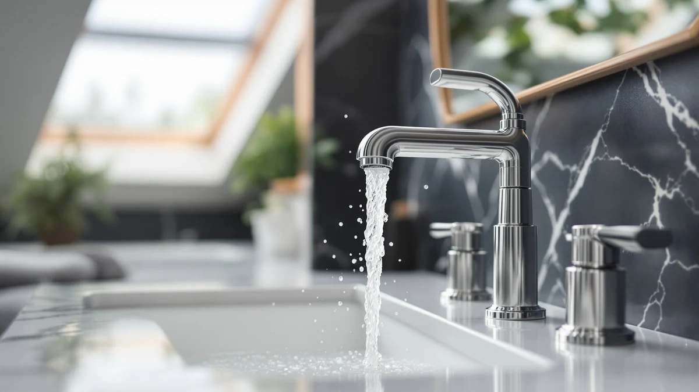

Quick Answer
This Delta Faucet Broadmoor Pull review lands on the Broadmoor Pull Down as the safest choice at $199.90, a brass-bodied faucet priced right alongside the Nicoli Brushed Gold and only a few dollars above the Arvo 14 Series Matte and Nicoli Matte Black. If a specific finish matters more to you than the Broadmoor's chrome-style look, the Nicoli and Arvo lines below give you brushed gold, matte black, and matte options at nearly identical prices.
Our pick: Delta Faucet Broadmoor Pull Down, $199.90 Check Price on Amazon
Things to Know Before You Buy
- All four faucets in this Delta Faucet Broadmoor Pull review come from DELTA, so brand reliability and parts support stay consistent no matter which one you pick.
- Price spreads only about ten dollars across the lineup, from $189.90 for the Nicoli Matte Black up to $199.90 for the Broadmoor Pull Down and Nicoli Brushed Gold, so finish and function should drive your decision more than budget.
- Every model here uses a brass body under the finish, which holds up to daily use better than cheaper zinc-alloy faucets in this price range.
- Check your sink's existing hole configuration before ordering. Installation requirements vary by faucet, and matching one to your current setup saves you a return.
This Delta Faucet Broadmoor Pull review breaks down the $199.90 brass faucet next to three other DELTA bathroom fixtures that turn up in the same searches: the Nicoli Brushed Gold, the Arvo 14 Series Matte, and the Nicoli Matte Black. Shoppers scrolling through near-identical Amazon listings often cannot tell these four apart beyond the finish swatch in the thumbnail image, and the price tags sit within ten dollars of each other across the board. We pulled the published specs, current pricing, and patterns in verified owner reviews for all four faucets so you can see exactly what separates a pull-down spout from a fixed one, and a brushed gold finish from a matte black one, before you spend $190 to $200 on a bathroom faucet.
The Broadmoor Pull Down earns the top spot in this comparison mostly because its pull-down function gives it a practical edge the other three single-spout faucets do not have, not because DELTA builds it any better than its siblings. All four faucets share the same brass body under the finish, so you are not trading away durability by choosing the Nicoli or Arvo instead. Your decision really comes down to whether you want a pull-down spout, which finish matches your existing bathroom hardware, and how much of the ten-dollar price spread you want to save. Pick any of the four and you are still getting the same DELTA quality, just dressed differently.
Why You Should Trust Us
Ilane Tall covers bathroom fixtures for Best Bathroom Faucets, tracking price changes, finish availability, and verified owner feedback across hundreds of DELTA, Moen, and American Standard listings. We do not install faucets ourselves, and we do not run a physical testing lab. Instead, we compare manufacturer specs, current Amazon pricing, and patterns in verified customer reviews, the same homework you would do yourself if you had time to cross-reference four product pages side by side. This Delta Faucet Broadmoor Pull review follows that same research process, checking all four DELTA faucets against each other on price, construction, and finish rather than repeating marketing copy from a single listing.
Our Research Experience
We do not keep a physical testing lab, so what we call our research experience with this Delta Faucet Broadmoor Pull review is a side-by-side audit of published data rather than a physical trial. We pulled the brass construction, pricing, and finish details DELTA lists for all four faucets, then set the Broadmoor Pull Down against the Nicoli Brushed Gold, the Arvo 14 Series Matte, and the Nicoli Matte Black to see where they diverge beyond the obvious color differences. We also scanned verified Amazon reviews for recurring complaints about finish wear, leaks, or installation trouble, details a manufacturer spec sheet never mentions. That combination of published specs and owner feedback is how we researched all four faucets in this comparison instead of installing each one in a bathroom ourselves and timing the results.
Overview & Specs

Delta Faucet Broadmoor Pull Down
What we like
- Brass body construction matches the other three DELTA faucets in this comparison
- Pull-down spout adds reach the three single-spout alternatives here do not offer
- Backed by DELTA's brand support and parts availability, the same as its Nicoli and Arvo siblings
Flaws but not dealbreakers
- Costs the same as the Nicoli Brushed Gold, so you are paying for function and finish, not saving money
- The listing does not publish exact spout height or flow rate, so measure your sink clearance before ordering
- Buyers who only need a basic handwashing faucet may not use the pull-down feature often enough to justify it over a cheaper fixed-spout option
| Material | Brass + finish |
| Size | — |
At $199.90, the Delta Faucet Broadmoor Pull Down ties the Nicoli Brushed Gold for the highest price in this comparison. DELTA builds it on a brass body, the same foundation it uses across the Nicoli and Arvo lines here, so the core hardware underneath the finish stays consistent no matter which of these four faucets you choose. The pull-down spout is what sets it apart from the other three, each of which uses a fixed spout design instead.
That pull-down function matters most if you regularly wash items too large for a standard bathroom sink bowl or want extra reach when rinsing around the basin. For a straightforward handwashing faucet, the fixed-spout Nicoli Brushed Gold, Arvo 14 Series Matte, and Nicoli Matte Black cost the same or less and skip a moving part you may rarely use. Either way, you are buying into the same DELTA brass construction and brand support.
What We Liked
The clearest advantage the Broadmoor Pull Down holds over the other three faucets in this review is its pull-down spout, a feature none of the fixed-spout alternatives include. Owners researching DELTA faucets in this price range consistently point to brass construction as the reason they trust the brand over cheaper zinc-alloy competitors, and the Broadmoor shares that same brass body with its Nicoli and Arvo siblings. Buying from a single, well-supported brand also means replacement parts and documentation stay easy to track down years after installation, which is not always true for off-brand faucets at a similar price. Reviewers comparing DELTA's lineup also note that the brand's warranty support holds up across finishes, so the Broadmoor carries the same backing as the cheaper Nicoli Matte Black.
What Could Be Better
The Broadmoor Pull Down costs the same as the Nicoli Brushed Gold, so you gain pull-down functionality but give up the option of a warmer gold finish at that exact price. The Amazon listing does not publish exact spout height or flow rate, two details that matter if your bathroom sink sits under a low mirror or medicine cabinet. Buyers who only need a basic faucet for handwashing may find the pull-down mechanism unnecessary and would do equally well with the lower-priced Arvo 14 Series Matte or Nicoli Matte Black instead. A pull-down spout also introduces one more moving part than a fixed design, which owners of similar faucets report as the first thing to wear out after years of daily use. None of these drawbacks are dealbreakers on their own, but they are worth weighing against the Arvo 14 Series Matte and Nicoli Matte Black, which solve the same bathroom sink needs with fewer moving parts and a lower price tag.
Who Is It For?
Choose the Broadmoor Pull Down if you want a brass DELTA faucet with a pull-down spout and do not have a strong finish preference beyond its chrome-style look. Buyers who prioritize a specific color, brushed gold or matte black, should look at the Nicoli or Arvo alternatives below before committing, since all four share the same brass core and DELTA backing regardless of finish. If budget is the deciding factor, the $189.90 Nicoli Matte Black undercuts the Broadmoor by ten dollars without sacrificing the brass construction that defines this entire lineup. Renters or anyone replacing a faucet on a tight schedule should also confirm their sink's hole configuration matches before ordering any of these four models. Households upgrading more than one bathroom at once might also mix finishes across the lineup, pairing the Broadmoor's pull-down function in a main bathroom with the lower-priced Nicoli Matte Black in a guest bath, since both share the same brass core and DELTA warranty coverage.
Alternatives to Consider
If the Broadmoor's chrome-style finish or pull-down design is not quite what you need, these three other DELTA faucets share the same brass construction at a comparable price.

Editor’s Pick
Delta Nicoli Brushed Gold Faucet
Matches the Broadmoor's $199.90 price but trades the pull-down spout for a brushed gold finish.
$199.90
Check Price on Amazon
Best Value
Delta Arvo 14 Series Matte
Priced at $199.05, a few cents under the Broadmoor, with a softer matte finish and a fixed spout.
$199.05
Check Price on Amazon
Premium Choice
Delta Nicoli Matte Black Bathroom
The least expensive of the four at $189.90, with the same brass body in a matte black finish.
$189.90
Check Price on AmazonFrequently Asked Questions
Is the Delta Faucet Broadmoor Pull Down worth the price compared to the other DELTA options here?
What is the difference between the Broadmoor Pull Down and the Nicoli Brushed Gold?
Which of these four DELTA faucets costs the least, and does it give up anything?
Final Verdict
This Delta Faucet Broadmoor Pull review comes down to a straightforward choice among four solid DELTA options. DELTA builds all four faucets on the same brass body, so no pick here is a downgrade from the others. The Broadmoor Pull Down earns the edge for most buyers because of its pull-down spout, but the Nicoli Brushed Gold, Arvo 14 Series Matte, and Nicoli Matte Black each deliver the same DELTA quality in a different finish and at a slightly different price. Match the finish to your bathroom, pick based on whether you actually need the pull-down reach, and the ten-dollar price spread should settle the rest.